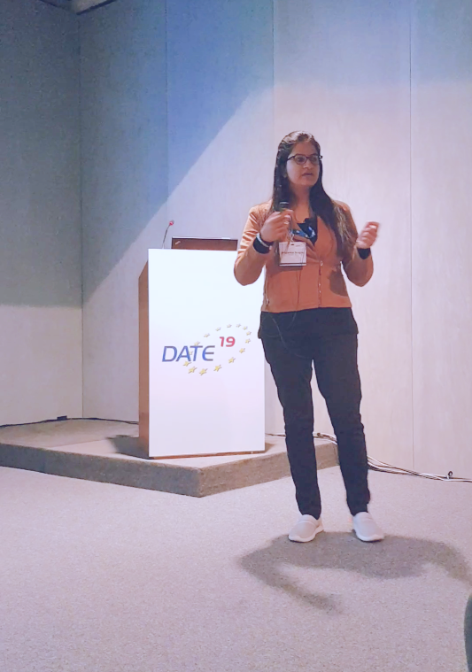

Research Updates
[Jul 2022] Presented our work, "CmpctArch: A Generic Low Power Architecture for Compact Data Structures in Energy Harvesting Devices", at ISVLSI 2022, Cyprus [virtual].
[May 2022] Our paper titled, "CmpctArch: A Generic Low Power Architecture for Compact Data Structures in Energy Harvesting Devices"", accepted as a regular paper in ISVLSI, Cyprus, 2022.
[Feb 2022] Our paper titled, "Polar Code-based Approximate Communication System for Multimedia Web Pages", accepted as an extended abstract in Information Processing in Sensor Networks (IPSN), Milan, Italy, 2022.
[Jan 2021] Presented our work, "EHDSktch: A Generic Low Power Architecture for Sketching in Energy Harvesting Devices", at Asia and South Pacific Design Automation Conference (ASP-DAC), Tokyo, Japan [virtual].
[Sept 2020] Our paper titled, "EHDSktch: A Generic Low Power Architecture for Sketching in Energy Harvesting Devices", accepted in Asia and South Pacific Design Automation Conference (ASP-DAC), 2021 as a regular paper.
[Jun 2020] The Department of Computer Science and ANSK School of IT, IIT Delhi released a promotional video for new PhD admissions: Happy@CSE.IITD
[Mar 2020] Our paper titled, "ApproxEHD: A Sketching based Generic Architecture for Energy Harvesting Devices", accepted in Design Automation Conference (DAC), 2020 [virtual] as a poster.
[Dec 2019] Presented our work, "FlexiCheck: An Adaptive Checkpointing Architecture for Energy Harvesting Devices", at PhD Symposium 2019, IIT Delhi.
 [Sept 2019] Gave a talk on "Efficient Intermittent Systems: A Survey and Research Proposal", at IIT Delhi.
[Sept 2019] Gave a talk on "Efficient Intermittent Systems: A Survey and Research Proposal", at IIT Delhi.
[Mar 2019] Presented our work, "FlexiCheck: An Adaptive Checkpointing Architecture for Energy Harvesting Devices", at Design, Automation and Test in Europe (DATE), Florence, Italy.
 [Dec 2018] Presented our work, "Probabilistic Sequential Consistency in Social Networks", at High Performance Computing (HiPC), Bangalore, India.
 [Nov 2018] Our paper titled, "FlexiCheck: An Adaptive Checkpointing Architecture for Energy Harvesting Devices", accepted in Design, Automation and Test in Europe (DATE), 2019 as a regular paper.
[Nov 2018] Our paper titled, "FlexiCheck: An Adaptive Checkpointing Architecture for Energy Harvesting Devices", accepted in Design, Automation and Test in Europe (DATE), 2019 as a regular paper.
[Sept 2018] Our paper titled, "Probabilistic Sequential Consistency in Social Networks", accepted in High Performance Computing (HiPC), 2018 as a regular paper.